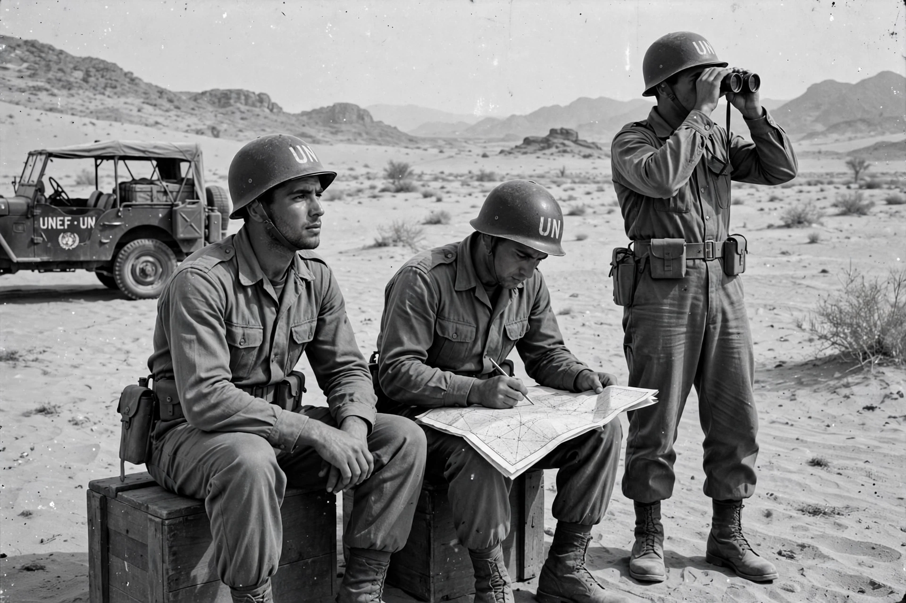

| Active | 1956–1967 |
|---|---|
| Type | Peacekeeping force |
| Size | Approx. 6,000 troops at peak |
| Headquarters | Gaza |
| First commander | Lt. Gen. E. L. M. Burns (Canada) |
The United Nations Emergency Force (UNEF) was a military and peacekeeping operation established by the United Nations General Assembly to secure an end to the Suez Crisis of 1956. Approved on 7 November 1956, it was the first armed international peacekeeping force in history and the model for subsequent United Nations peacekeeping.
After Britain, France and Israel invaded Egypt following Gamal Abdel Nasser's nationalisation of the Suez Canal, Canadian foreign minister Lester B. Pearson proposed an international force to interpose between the combatants while the invaders withdrew. The General Assembly, acting under the "Uniting for Peace" procedure, created UNEF from contingents of countries including Canada, India, Sweden, Brazil, Colombia, Indonesia, Norway, Denmark, Finland and Yugoslavia — deliberately excluding the great powers.
UNEF deployed on Egyptian territory with Egypt's consent, patrolling the Sinai and Gaza Strip and supervising the Straits of Tiran, and it kept the Egyptian–Israeli frontier quiet for a decade. In May 1967 Nasser demanded its withdrawal; Secretary-General U Thant complied, and the force was disbanded just before the Six-Day War began in June 1967 — a sequence still debated by historians. A second force, UNEF II, served between Egypt and Israel from 1973 to 1979 following the Yom Kippur War.